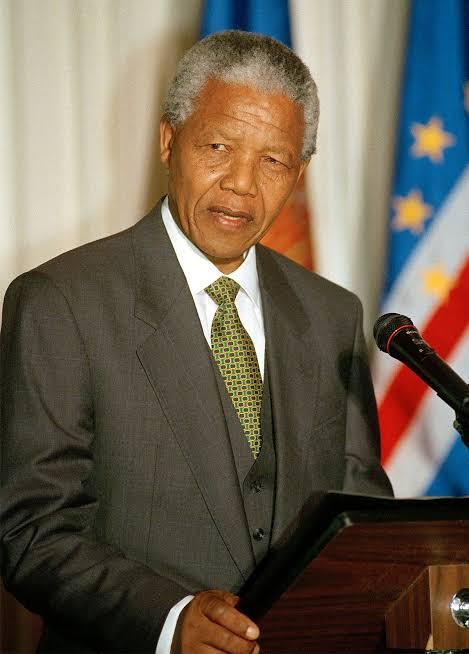

First Democratic President
Mandela became South Africa's first democratically elected president in 1994.
A symbol of freedom, equality and reconciliation

Nelson Rolihlahla Mandela was born on 18 July 1918 in Mvezo, South Africa. He became one of the world's most respected leaders through his fight against apartheid and racial inequality.
Mandela spent 27 years in prison because of his opposition to apartheid. After his release in 1990, he worked towards creating a democratic and united South Africa.
In 1994, Nelson Mandela became South Africa's first democratically elected president. He promoted reconciliation, peace and equality among South Africans.
Mandela became South Africa's first democratically elected president in 1994.
In 1993, Mandela and F. W. de Klerk received the Nobel Peace Prize for their work towards ending apartheid peacefully.
Mandela encouraged forgiveness and reconciliation instead of revenge after apartheid ended.
Nelson Mandela is born in Mvezo, South Africa.
Mandela joins the African National Congress and becomes involved in the struggle against apartheid.
Mandela is sentenced to life imprisonment.
Mandela is released from prison after 27 years.
Mandela becomes South Africa's first democratically elected president.
Nelson Mandela passes away at the age of 95.
Nelson Mandela's legacy continues to inspire people around the world. His life demonstrated the importance of courage, equality, forgiveness and perseverance.
"It always seems impossible until it's done."